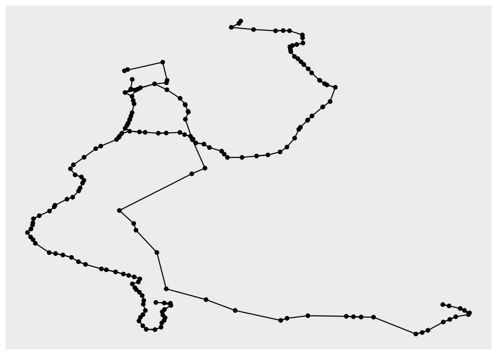
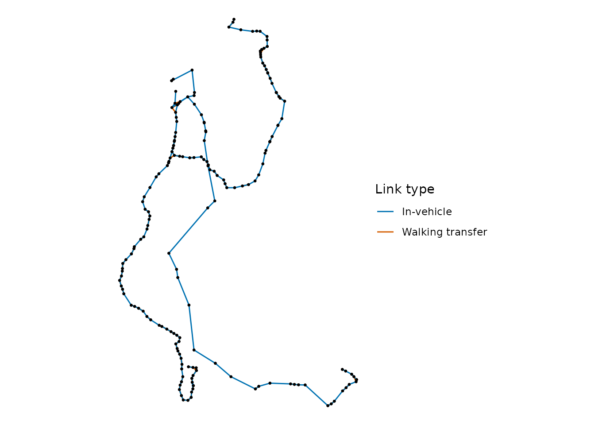

Many transport analyses, such as network centrality and transit
assignment models, are carried out on a graph of the transit network
rather than on its timetable. build_graph() builds such a
graph from the trips of a GTFS feed that depart within a period of day.
The graph has two types of nodes:
- stop nodes, one per stop, the physical place where a passenger stands;
- service nodes, one for each route and direction at each stop it serves.
obs. this way, a stop served by routes 1 and 2, both in one direction, gets one stop node and two service nodes, all at the same coordinates.
And four types of links:
- in-vehicle links between the service nodes of consecutive stops, with the mean travel time between them;
- boarding links from each stop to the service nodes from which trips depart, with the number of departures and the mean waiting time (half the headway);
- alighting links from each service node back to its stop;
- walking transfer links between nearby stops.
The graph can be returned as tables following the General Modeling
Network Specification (GMNS), or as an igraph or
tidygraph graph. This vignette shows how to build a
transit network graph from GTFS feeds and how to analyse and plot the
network with these packages like sfnetworks and
ggraph. Please see the documentation of
build_graph() for the details of how nodes and links are
built.
Preparing the feed
We will use the sample feed of Porto Alegre, included in the package,
and build the network of the morning peak, from 7am to 10am.
build_graph() pools the trips of every service in the feed.
In this example, we will remove services running on weekends with
filter_by_weekday():
library(gtfstools)
library(dplyr)
# read GTFS feed
path <- system.file("extdata/poa_gtfs.zip", package = "gtfstools")
gtfs <- read_gtfs(path)
# drop weekends
gtfs <- filter_by_weekday(
gtfs,
weekday = c("saturday", "sunday"),
keep = FALSE
)Oftentimes, a GTFS feed comes with a few inconsistencies, such as
duplicated trips, unused stops, etc. This particular feed lists only the
times of the first and the last stop of each trip, and the links between
stops without times would have no travel time, so they couldn’t be used
to calculate travel times through the network. Here we will use the
fix_gtfs() function to fix several of these
inconsistencies. We also want to ensure that no trips exceed 25 km/h and
that all trips have a minimum dwell time of 30 seconds to allow
passengers to board and alight.
gtfs <- fix_gtfs(gtfs, max_speed = 25, min_dwell_time = 30)obs. in this case, fix_gtfs() throws two warnings that
refer to a few late night trips whose times go back to “00:00:00” after
midnight. These trips depart outside the time of day used below, so they
don’t affect the network.
Building a GMNS network
By default, build_graph() returns the GMNS
node, link and config tables:
g_gmns <- build_graph(
gtfs,
from = "07:00:00",
to = "10:00:00",
format = "gmns"
)
head(g_gmns$node)
#> node_id x_coord y_coord node_type parent_node_id stop_id
#> <int> <num> <num> <char> <int> <char>
#> 1: 1 -51.20856 -30.14726 stop NA 1065
#> 2: 2 -51.20095 -30.15292 stop NA 126
#> 3: 3 -51.24399 -30.07915 stop NA 1323
#> 4: 4 -51.24321 -30.07709 stop NA 1326
#> 5: 5 -51.23117 -30.06218 stop NA 1427
#> 6: 6 -51.23059 -30.06072 stop NA 1434
#> stop_name route_id direction_id inferred_direction visit
#> <char> <char> <int> <int> <int>
#> 1: JUCA BATISTA <NA> NA NA NA
#> 2: JUCA BATISTA <NA> NA NA NA
#> 3: PINHEIRO BORDA <NA> NA NA NA
#> 4: PINHEIRO BORDA <NA> NA NA NA
#> 5: MENINO DEUS PADRE CACIQUE <NA> NA NA NA
#> 6: MENINO DEUS PADRE CACIQUE <NA> NA NA NA
head(g_gmns$link)
#> link_id from_node_id to_node_id directed length free_speed link_type
#> <int> <int> <int> <lgcl> <num> <num> <char>
#> 1: 1 184 185 TRUE 965.4371 21.85895 in_vehicle
#> 2: 2 185 201 TRUE 1279.7466 22.80737 in_vehicle
#> 3: 3 186 187 TRUE 241.8582 24.41186 in_vehicle
#> 4: 4 187 338 TRUE 510.1041 24.59430 in_vehicle
#> 5: 5 188 189 TRUE 171.8830 24.75115 in_vehicle
#> 6: 6 189 190 TRUE 307.4807 24.41759 in_vehicle
#> travel_time departures route_id direction_id inferred_direction
#> <num> <int> <char> <int> <int>
#> 1: 2.6500000 17 R10 1 NA
#> 2: 3.3666667 17 R10 1 NA
#> 3: 0.5944444 6 176 0 NA
#> 4: 1.2444444 6 176 0 NA
#> 5: 0.4166667 6 176 0 NA
#> 6: 0.7555556 6 176 0 NA
g_gmns$link |>
dplyr::count(link_type)
#> link_type n
#> <char> <int>
#> 1: alighting 188
#> 2: boarding 185
#> 3: in_vehicle 185
#> 4: transfer 302The tables can be written to the CSV files of a GMNS network with
data.table::fwrite(), as shown in the examples of
build_graph(), and then read by other modelling
software.
Building and igraph and Calculating the centrality of stops
With format = "igraph", the network is returned as an
igraph graph, whose links have the travel time as an
attribute. We use it to calculate the shortest travel times between
every pair of stops, which include the waiting time at the stops where
vehicles are boarded:
library(igraph)
g_igraph <- build_graph(
gtfs,
from = "07:00:00",
to = "10:00:00",
format = "igraph"
)
# get stop nodes
stop_nodes <- igraph::V(g_igraph)[node_type == "stop"]
# get travel times between stops
travel_times <- igraph::distances(
g_igraph,
v = stop_nodes,
to = stop_nodes,
mode = "out",
weights = igraph::E(g_igraph)$travel_time
)
# travel time from one stop to itself is NA
# an `Inf` value means {igraph} found no path for a given origin-destination pair.
diag(travel_times) <- NAFrom these travel times, we calculate the closeness centrality of
each stop, which tell us how close a node is to all other nodes in the
network. To do this, we calculate harmonic mean of the inverse of the
travel times between each stop and the other stops. Stops that can’t be
reached count as 0. We don’t use the centrality functions of
igraph, such as closeness(), because they
would also take the service nodes as destinations, and because they
require positive weights, while alighting links have a travel time of 0.
This sample feed has a single direction of each route, so the closeness
from a stop depends on how far it is from the end of its
routes, and the closeness to it on how far it is from their
start. Hence we average the closeness from and to each stop:
closeness <- data.frame(
stop_id = stop_nodes$stop_id,
stop_name = stop_nodes$stop_name,
closeness_from = rowMeans(1 / travel_times, na.rm = TRUE),
closeness_to = colMeans(1 / travel_times, na.rm = TRUE)
) |>
dplyr::mutate(closeness = (closeness_from + closeness_to) / 2)
closeness |>
dplyr::slice_max(closeness, n = 10)
#> stop_id stop_name closeness_from closeness_to
#> 109 5065 TRES FIGUEIRAS CARLOS GOMES 0.05738224 0.04751497
#> 70 2920 TRES FIGUEIRAS CARLOS GOMES 0.05720156 0.04733027
#> 105 5056 PETROPOLIS CARLOS GOMES 0.04954473 0.04768110
#> 66 2874 TRES FIGUEIRAS CARLOS GOMES 0.04929724 0.04754615
#> 139 6133 JARDIM BOTANICO SENADOR TARSO DUTRA 0.04830932 0.04290521
#> 64 2849 JARDIM BOTANICO SENADOR TARSO DUTRA 0.04824188 0.04296696
#> 42 1784 MEDIANEIRA DR CARLOS BARBOSA 0.03520531 0.04540470
#> 41 1783 MEDIANEIRA DR CARLOS BARBOSA 0.03464400 0.04498900
#> 157 6414 MENINO DEUS PRAIA DE BELAS 0.03057636 0.04848460
#> 62 2702 JARDIM BOTANICO DR SALVADOR FRANCA 0.04206430 0.03652148
#> closeness
#> 109 0.05244860
#> 70 0.05226592
#> 105 0.04861292
#> 66 0.04842169
#> 139 0.04560726
#> 64 0.04560442
#> 42 0.04030501
#> 41 0.03981650
#> 157 0.03953048
#> 62 0.03929289Plotting the network with tidygraph, sfnetworks and ggraph
With format = "tidygraph", the network is returned as a
tidygraph graph, whose nodes have the coordinates of
their stops. These coordinates can be used to plot the network with
ggraph:
a <- build_graph(gtfs, from = "08:00:00", to = "10:00:00", format = "tidygraph")
a
#> # A tbl_graph: 371 nodes and 860 edges
#> #
#> # A directed simple graph with 1 component
#> #
#> # Node Data: 371 × 12 (active)
#> name node_id x_coord y_coord node_type parent_node_id stop_id stop_name
#> <chr> <int> <dbl> <dbl> <chr> <int> <chr> <chr>
#> 1 1 1 -51.2 -30.1 stop NA 1065 JUCA BATISTA
#> 2 2 2 -51.2 -30.2 stop NA 126 JUCA BATISTA
#> 3 3 3 -51.2 -30.1 stop NA 1323 PINHEIRO BORDA
#> 4 4 4 -51.2 -30.1 stop NA 1326 PINHEIRO BORDA
#> 5 5 5 -51.2 -30.1 stop NA 1427 MENINO DEUS P…
#> 6 6 6 -51.2 -30.1 stop NA 1434 MENINO DEUS P…
#> 7 7 7 -51.2 -30.1 stop NA 1436 PRAIA DE BELAS
#> 8 8 8 -51.2 -30.1 stop NA 1443 JOSE DE ALENC…
#> 9 9 9 -51.2 -30.1 stop NA 1444 JOSE DE ALENC…
#> 10 10 10 -51.2 -30.1 stop NA 1448 PRAIA DE BELAS
#> # ℹ 361 more rows
#> # ℹ 4 more variables: route_id <chr>, direction_id <int>,
#> # inferred_direction <int>, visit <int>
#> #
#> # Edge Data: 860 × 14
#> from to link_id from_node_id to_node_id directed length free_speed
#> <int> <int> <int> <int> <int> <lgl> <dbl> <dbl>
#> 1 184 185 1 184 185 TRUE 965. 21.9
#> 2 185 201 2 185 201 TRUE 1280. 22.8
#> 3 186 187 3 186 187 TRUE 242. 24.4
#> # ℹ 857 more rows
#> # ℹ 6 more variables: link_type <chr>, travel_time <dbl>, departures <int>,
#> # route_id <chr>, direction_id <int>, inferred_direction <int>
ggraph(a, layout = "manual", x = x_coord, y = y_coord) +
geom_edge_link() +
geom_node_point()
This plot treats longitudes and latitudes as plain coordinates. To work with the network as spatial data, we convert it into an sfnetworks network, in which nodes are points and links are lines. Since boarding and alighting links connect nodes at the same place, we keep only the in-vehicle and transfer links, and place the in-vehicle links last, so that they are drawn on top:
net <- a |>
tidygraph::activate("edges") |>
dplyr::filter(link_type %in% c("in_vehicle", "transfer")) |>
dplyr::arrange(dplyr::desc(link_type)) |>
sfnetworks::as_sfnetwork(
coords = c("x_coord", "y_coord"),
crs = 4326,
remove = FALSE,
edges_as_lines = TRUE,
message = FALSE
)
net
#> # A sfnetwork with 371 nodes and 487 edges
#> #
#> # CRS: EPSG:4326
#> #
#> # A directed simple graph with 61 components with spatially explicit edges
#> #
#> # Node data: 371 × 13 (active)
#> name node_id x_coord y_coord node_type parent_node_id stop_id stop_name
#> <chr> <int> <dbl> <dbl> <chr> <int> <chr> <chr>
#> 1 1 1 -51.2 -30.1 stop NA 1065 JUCA BATISTA
#> 2 2 2 -51.2 -30.2 stop NA 126 JUCA BATISTA
#> 3 3 3 -51.2 -30.1 stop NA 1323 PINHEIRO BORDA
#> 4 4 4 -51.2 -30.1 stop NA 1326 PINHEIRO BORDA
#> 5 5 5 -51.2 -30.1 stop NA 1427 MENINO DEUS PA…
#> 6 6 6 -51.2 -30.1 stop NA 1434 MENINO DEUS PA…
#> # ℹ 365 more rows
#> # ℹ 5 more variables: route_id <chr>, direction_id <int>,
#> # inferred_direction <int>, visit <int>, geometry <POINT [°]>
#> #
#> # Edge data: 487 × 15
#> from to link_id from_node_id to_node_id directed length free_speed
#> <int> <int> <int> <int> <int> <lgl> <dbl> <dbl>
#> 1 3 4 559 3 4 TRUE 242. 5
#> 2 5 6 560 5 6 TRUE 172. 5
#> 3 5 151 561 5 151 TRUE 69.1 5
#> # ℹ 484 more rows
#> # ℹ 7 more variables: link_type <chr>, travel_time <dbl>, departures <int>,
#> # route_id <chr>, direction_id <int>, inferred_direction <int>,
#> # geometry <LINESTRING [°]>net can be used with the functions of
sfnetworks and sf, for example to filter
the network by a spatial extent or to join it with other spatial data.
It can also be mapped with the "sf" layout of
ggraph:
ggraph(net, layout = "sf") +
geom_edge_sf(aes(colour = link_type)) +
geom_node_sf(size = 0.5) +
scale_edge_colour_manual(
name = "Link type",
values = c(in_vehicle = "#0072B2", transfer = "#D55E00"),
labels = c(in_vehicle = "In-vehicle", transfer = "Walking transfer")
) +
theme_void()